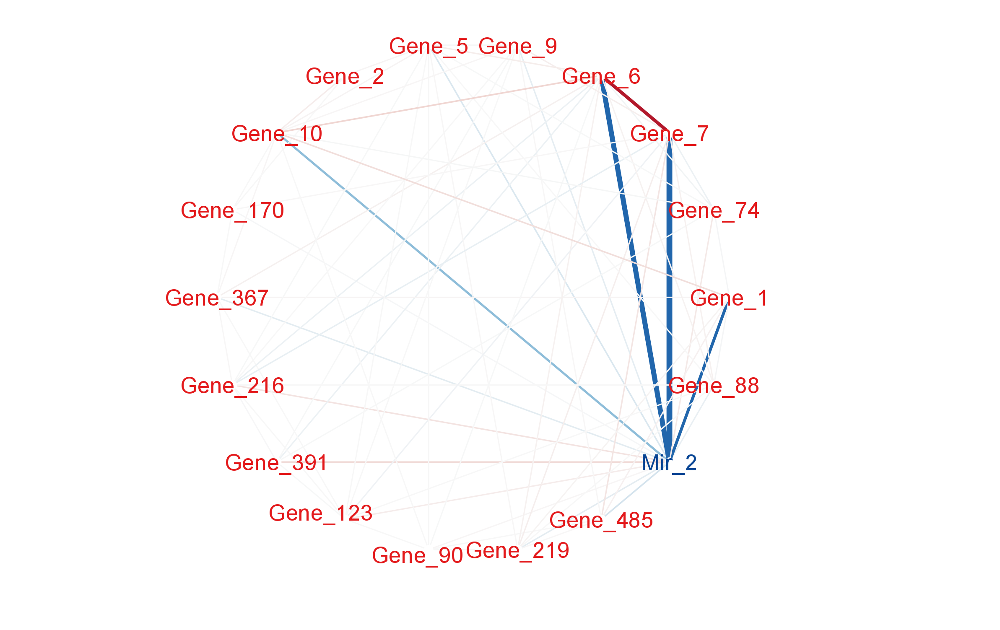

A New Generation of SmCCNet Package for Multi-omics Network Inference
Multiple Drawbacks are found in SmCCNet 1.0.0
There are multiple updates in SmCCNet 2.0.0:
…and more
Everything except for getAbar() are retired.
| Function | Description |
|---|---|
getRobustPseudoWeights() |
Compute aggregated (SmCCA) canonical weights. |
getAbar() |
Calculate similarity matrix based on canonical weights. |
getMultiOmicsModules() |
Perform hierarchical tree cutting on the similarity matrix and extract clades with multi-omics features. |
plotMultiOmicsNetwork() |
Plot (pruned or full) multi-omics subnetworks. |
| Function | Description |
|---|---|
aggregateCVSingle() |
Save cross-validation result and recommend penalty term selection. |
classifierEval() |
Evaluate binary classifier’s performance using various metrics. |
dataPreprocess() |
Preprocess data for SmCCNet (centering, scaling, filtering, regressing out covariates). |
fastAutoSmCCNet() |
Automated SmCCNet: identifies project type, preprocesses data, and runs the SmCCNet pipeline. |
getCanWeightsMulti() |
Run SmCCA and return canonical weight. |
getCanCorMulti() |
Retrieve canonical correlation value for SmCCA. |
getRobustWeightsMulti() |
Calculate canonical weights for SmCCA. |
getRobustWeightsMultiBinary() |
SmCCNet for multi-omics data with binary phenotype using SmCCA and SPLSDA. |
getRobustWeightsSingle() |
Compute SmCCA canonical weights for single omics with quantitative phenotype. |
getRobustWeightsSingleBinary() |
Compute SmCCA canonical weights for single omics with binary phenotype. |
getOmicsModules() |
Extract clades with omics features from similarity matrix. |
networkPruning() |
Extract summarization scores for network module and rank omics features. |
scalingFactorInput() |
Input annotation of omics data and provide scaling factor for SmCCNet. |
| Methods | Description |
|---|---|
CoV Filtering |
Filter features using coefficients of variation (CoV). |
Standardization |
Center and/or scale data. |
Adjust for Covariates |
Regress out specified covariates and provide residuals. |
| Arguments | Description |
|---|---|
K |
Number of folds in CV. Suitable for 5-fold CV. For training sets with <30 samples or unscalable sets, choose a smaller \(K\). |
CCcoef |
Coefficients \((a_{i,j}, b_{i})\) for weighted SmCCA. Can be supplied manually or iteratively. |
PenExpand |
Penalty option matrix for \(X_1, X_2\). Each row is a penalty option pair \(l = (l_1, l_2)\) with \(0<l_1, l_2<1\). |
X |
List of omics data with consistent set and order of subjects. |
num_omics |
Total number of omics data in \(X\). |
tuneLength |
Total number of candidate penalty terms for each penalty parameter. |
minTune |
Minimum possible value for penalty parameters. |
maxTune |
Maximum possible tuning value for penalty parameters. |
library(SmCCNet)
# import data
data(ExampleData)
p1 <- ncol(X1)
p2 <- ncol(X2)
n <- nrow(X1)
AbarLabel <- c(colnames(cbind(X1, X2)))
# number of folds in K-fold CV.
K <- 3
N <- nrow(X1)
# create a list of omics data **
X <- list(X1, X2)
# number of omics dataset **
num_omics <- 2
# tuning parameter candidate length for each omics data
tuneLength <- 5
# tuning parameter candadate range for each omics data
minTune <- 0.1
maxTune <- 0.5
# create empty matrix to store all possible penalty parameters
penSelect <- matrix(0, nrow = tuneLength, ncol = num_omics)
# create sparsity penalty options.
for (Idx in 1:ncol(penSelect))
{
penSelect[,Idx] <- seq(from = minTune,
to = maxTune,
length.out = tuneLength)
}
# expand grid
# convert matrix to list of columns
list_cols <- as.list(as.data.frame(penSelect))
# generate all possible combinations
PenExpand <- do.call(expand.grid, list_cols)
# set a CV directory.
CVDir <- "Example3foldCV/"
dir.create(CVDir)set.seed(12345) # set random seed.
# split data into folds
foldIdx <- suppressWarnings(split(1:nrow(X[[1]]), sample(1:nrow(X[[1]]), K)))
folddata <- purrr::map(1:length(foldIdx), function(x){
Y <- as.matrix(Y)
X_train <- list()
X_test <- list()
Y_train <- list()
Y_test <- list()
for (i in 1:length(X))
{
X_train[[i]] <- scale(X[[i]][-foldIdx[[x]],])
X_test[[i]] <- scale(X[[i]][foldIdx[[x]],])
}
Y_train <- scale(Y[-foldIdx[[x]],])
Y_test <- scale(Y[foldIdx[[x]],])
return(list(X_train = X_train, X_test = X_test,Y_train = Y_train,
Y_test = Y_test))
})
# name each fold of data
names(folddata) <- paste0('Fold_', 1:K)
# saving all preliminary data into local directory for reproducibility purpose
save(folddata, PenExpand,
file = paste0(CVDir, "CVData.RData"))# load cross-validation data
load(paste0(CVDir, "CVData.RData"))
# create an empty list for storing CV result for each fold
CVResult <- list()
for (CVidx in 1:K)
{
# set scaling factor
CCcoef <- scalingFactor
# create empty vector for storing cross-validation result
RhoTrain <- RhoTest <- DeltaCor <- rep(0, nrow(PenExpand))
for(idx in 1:nrow(PenExpand))
{
# consider one pair of sparsity penalties at a time.
l <- PenExpand[idx, ]
# run SmCCA on the subsamples (Figure 1, Step II)
Ws <- getCanWeightsMulti(folddata[[CVidx]][["X_train"]],
Trait = as.matrix(folddata[[CVidx]][["Y_train"]]),
Lambda = as.numeric(l), NoTrait = FALSE,
CCcoef = CCcoef)
# evaluate the canonical correlation for training and testing data
rho.train <- getCanCorMulti(X = folddata[[CVidx]][["X_train"]],
Y = as.matrix(folddata[[CVidx]][["Y_train"]]),
CCWeight = Ws,
CCcoef = CCcoef)
rho.test <- getCanCorMulti(X = folddata[[CVidx]][["X_test"]],
Y = as.matrix(folddata[[CVidx]][["Y_test"]]),
CCWeight = Ws,
CCcoef = CCcoef)
# store cv result
RhoTrain[idx] <- round(rho.train, digits = 5)
RhoTest[idx] <- round(rho.test, digits = 5)
DeltaCor[idx] <- abs(rho.train - rho.test)
}
# record prediction errors for given CV fold and all sparsity penalty
# options.
CVResult[[CVidx]] <- cbind(RhoTrain, RhoTest, DeltaCor)
}The best penalty term should minimized the scaled prediction error:
\[\begin{equation} scaledPredErr = \frac{|trainCC - testCC|}{|testCC|}, \end{equation}\]where \(trainCC\) and \(testCC\) is defined as the training canonical correlation and testing canonical correlation respectively.
# aggregate CV result and select the best penalty term
AggregatedCVResult <- Reduce("+", CVResult) / length(CVResult)
# calculate the evaluation metric of interest
EvalMetric <- apply(AggregatedCVResult, 1, function(x) {x[3]/abs(x[2])})
# determine the best CV result
optIdx <- which.min(EvalMetric)
# combine CV evaluation result with penalty candidates
overallCVInfo <- cbind(PenExpand, AggregatedCVResult, scaledPredError = EvalMetric)
# set column names for penalty terms
colnames(overallCVInfo)[1:num_omics] <- paste0('l',1:num_omics)
# save overall CV result
write.csv(overallCVInfo, file = paste0(CVDir, 'overallCVInfo.csv'),
row.names = FALSE)
# feature sampling proportions, 0.9 for miRNA since it has less features. **
s <- c(0.7,0.9)
# number of subsamples.
SubsamplingNum <- 50
# run SmCCA on the subsamples (Figure 1, Step II)
Ws <- getRobustWeightsMulti(X,
Trait = as.matrix(Y),
NoTrait = FALSE,CCcoef = scalingFactor,
Lambda = as.numeric(overallCVInfo[optIdx,1:num_omics]),
s = s,
SubsamplingNum = SubsamplingNum)Get multi-omics modules by constructing global adjacency matrix and applying hierarchical tree cutting and plotting the reconstructed networks:
# make sure there are no duplicated labels
AbarLabel <- make.unique(AbarLabel)
# create concatenate omics data for network pruning
X_big <- cbind(X1,X2)
# calculate feature correlation matrix
bigCor2 <- cor(X_big)
# data type
types <- c(rep('gene', ncol(X1)), rep('mirna', ncol(X2)))
# filter out network modules with insufficient number of nodes
module_length <- unlist(lapply(OmicsModule, length))
network_modules <- OmicsModule[module_length > 10]
# extract pruned network modules
for(i in 1:length(network_modules))
{
cat(paste0('For network module: ', i, '\n'))
# define subnetwork
abar_sub <- Abar[network_modules[[i]],network_modules[[i]]]
cor_sub <- bigCor2[network_modules[[i]],network_modules[[i]]]
# prune network module
networkPruning(Abar = abar_sub,CorrMatrix = cor_sub,
type = types[network_modules[[i]]],
data = X_big[,network_modules[[i]]],
Pheno = Y, ModuleIdx = i, min_mod_size = 10,
max_mod_size = 100, method = 'NetSHy',
saving_dir = CVDir)
}
Two omics data: mRNA and miRNA with a quantitative phenotype.
Goal: Evaluate performance of scaling factors for each scaling factors combination.
Create candidate scaling factors:
Set all omics-omics scaling factor to 1.
Vary the omics-phenotype scaling factors.
Ensure scaling factors sum up to 1 (e.g., \(a_{1,2} + b_1 + b_2 = 1\)).
Use nested grid search to select optimal scaling factors and penalty parameters.
For each scaling factor combination:
Choose sparse penalty parameters (l1, l2) via K-fold cross validation.
Minimize scaled prediction error to determine best penalty pair.
Record best scaled prediction error for each scaling factor set to find optimal factors.
Refer to SmCCNet multi-omics vignette for code and implementation.
Hybrid step-wise approach incorporates:
Step 1: SmCCA on Omics data
Objective: find molecular features with high connectivity.
Use relaxed penalty parameter to include as many molecular features as possible.
Select molecular features for step 2.
Obtain feature weight vectors.
Step 2: SPLSDA on phenotype
Concatenate selected molecular features
Run SPLSDA
Obtain feature weight vectors.
Final feature weight for global network construction:
- Weighted sum of SmCCA feature weight vectors and SPLSDA feature weight vectors.
Note: when selecting the best penalty term with performance measure, only run through step 1-5 to obtain prediction performance. For more detail, please refer to the multi-omics vignette.
| Argument | Description |
|---|---|
| X | A list of omics matrices with same set and order of subjects |
| Y | Phenotype variable of either numeric or binary, for binary variable, for binary Y, it should be binarized to 0 and 1 before running this function. |
| AdjustedCovar | A data frame of covariates of interest to be adjusted for through regressing-out approach, preprocess must be set to TRUE. |
| Kfold | Number of folds for cross-validation, default is set to 5. |
| EvalMethod | For single or multi-omics with binary phenotype, the evaluation methods used to selected the optimal penalty parameter(s). The selections is among ‘accuracy’, ‘auc’, ‘precision’, ‘recall’, and ‘f1’, default is set to ‘accuracy’. |
| subSampNum | Number of subsampling to run, the higher the better in terms of accuracy, but at a cost of computational time, we generally recommend 500-1000 to increase robustness. |
| BetweenShrinkage | A real number > 0 that helps shrink the importance of omics-omics correlation component, the larger this number is, the greater the shrinkage it is, default is set to 2. |
| ScalingPen | A numeric vector of length 2 used as the penalty terms for scaling factor selection method, default set to 0.1, and should be between 0 and 1. |
| DataType | A vector indicating omics type for each element of X, example would be c(‘gene’, ‘miRNA’). |
| CutHeight | A numeric value specifying the cut height for hierarchical clustering, should be between 0 and 1, default is set to \(1-0.1^{10}\). |
| min_size | Minimally possible subnetwork size after network pruning, default set to 10. |
| max_size | Maximally possible subnetwork size after network pruning, default set to 100. |
| summarization | Summarization method used for network pruning and summarization, should be either ‘NetSHy’ or ‘PCA’, default is set to ‘NetSHy’. |
| saving_dir | Directory where user would like to store the subnetwork results, default is set to the current working directory. |
| preprocess | TRUE or FALSE, Whether the data preprocessing step should be conducted, default is set to FALSE. If covariates adjustment is needed, add covariates to the AdjustedCovar argument. |
| ncomp_pls | Number of components for PLS algorithm, only used when binary phenotype is given, default is set to 3. |
| tuneLength | The total number of candidate penalty term values for each omics data, default is set to 5. |
| tuneRangeCCA | A vector of length 2 that represents the range of candidate penalty term values for each omics data based on canonical correlation analysis, default is set to c(0.1,0.5). |
| tuneRangePLS | A vector of length 2 that represents the range of candidate penalty term values for each omics data based on partial least squared discriminant analysis, default is set to c(0.5,0.9). |
| seed | Random seed for result reproducibility, default is set to 123. |
library(SmCCNet)
set.seed(123)
data("ExampleData")
Y_binary <- ifelse(Y > quantile(Y, 0.5), 1, 0)
# single-omics PLS
result <- fastAutoSmCCNet(X = list(X1), Y = as.factor(Y_binary), Kfold = 3,
subSampNum = 100, DataType = c('Gene'),
saving_dir = getwd(), EvalMethod = 'auc',
summarization = 'NetSHy',
CutHeight = 1 - 0.1^10, ncomp_pls = 5)
# single-omics CCA
result <- fastAutoSmCCNet(X = list(X1), Y = Y, Kfold = 3, preprocess = FALSE,
subSampNum = 50, DataType = c('Gene'),
saving_dir = getwd(), summarization = 'NetSHy',
CutHeight = 1 - 0.1^10)
# multi-omics PLS
result <- fastAutoSmCCNet(X = list(X1,X2), Y = as.factor(Y_binary),
Kfold = 3, subSampNum = 50,
DataType = c('Gene', 'miRNA'),
CutHeight = 1 - 0.1^10,
saving_dir = getwd(), EvalMethod = 'auc',
summarization = 'NetSHy',
BetweenShrinkage = 5, ncomp_pls = 3)
# multi-omics CCA
result <- fastAutoSmCCNet(X = list(X1,X2), Y = Y,
K = 3, subSampNum = 50, DataType = c('Gene', 'miRNA'),
CutHeight = 1 - 0.1^10,
saving_dir = getwd(),
summarization = 'NetSHy',
BetweenShrinkage = 5)We would like to acknowledge the original contributors to the SmCCNet R package, including Yonghua Zhuang, W. Jenny Shi, and Laura Saba. Their collective contributions to the earlier versions of SmCCNet have been instrumental in shaping its development.
We are also deeply grateful to Dr.Katerina Kechris, for her continuous guidance and support, which has been vital in the refinement of this package.
Special thanks to Thao Vu, Iain Konigsberg, and Katherine Pratte for their invaluable feedback and internal testing of the package.
The SmCCNet R package owes much of its growth and functionality to these original contributors, and we appreciate their enduring influence on its development.